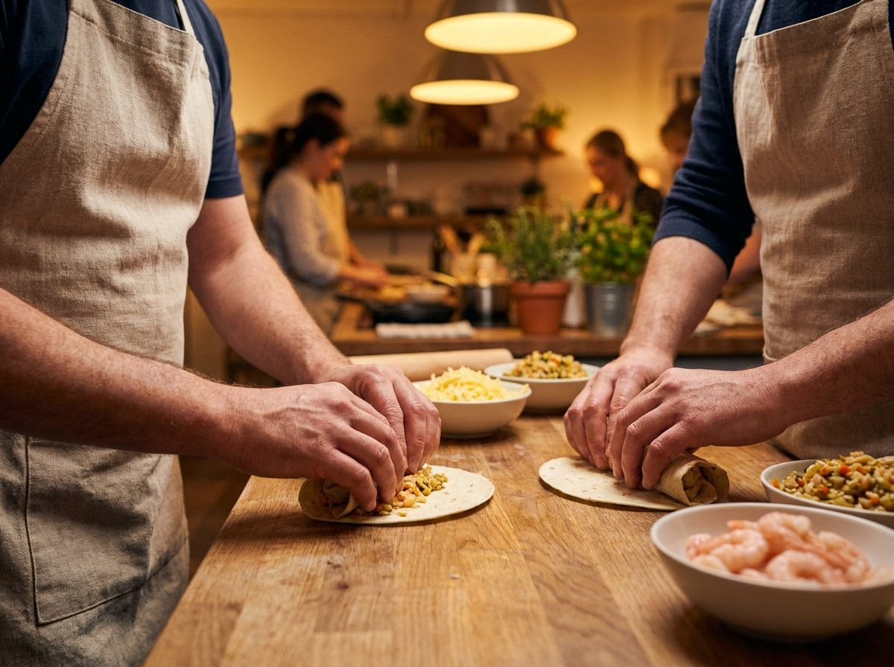
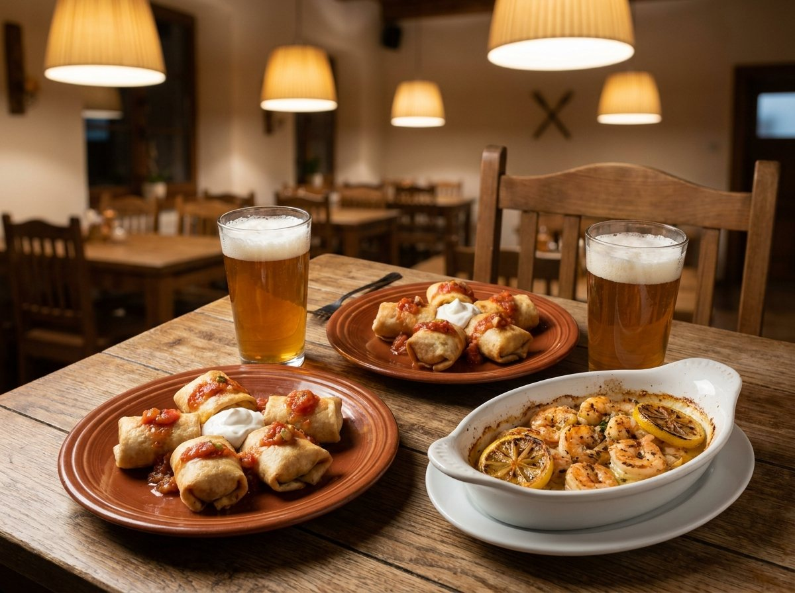

미니 치미창가와 갈릭버터쉬림프를 직접 만들어 그 자리에서 저녁으로 먹습니다. 끝나면 도보 1분 밀당브로이에서 구포 밀로 빚은 수제맥주 한 잔까지. 요리 경험은 없어도 됩니다.
반죽부터 오븐까지 순서대로 알려드리는 커리큘럼이라 처음 오신 분도 실패 없이 완성합니다. 혼자 오셔도 조를 맞춰드립니다.
만든 치미창가와 갈릭버터쉬림프를 그 자리에서 저녁으로 먹습니다. 클래스 끝나고 밥집을 따로 찾을 필요가 없습니다.
도보 1분 밀당브로이에서 구포 밀로 빚은 수제맥주 1잔이 포함되어 있습니다. 운전하시면 음료로 바꿔드립니다.


※ 진행 분위기를 보여드리는 연출 이미지가 포함되어 있습니다.
구포역에서 도보 3분. 앞치마를 두르고 손을 씻습니다.
치미창가를 채워 굽고, 갈릭버터쉬림프를 오븐에. 강사가 순서대로 안내합니다.
만든 요리를 그 자리에서 저녁으로. 든든한 한 끼입니다.
도보 1분 밀당브로이에서 구포 수제맥주로 마무리.
4명부터 30명까지 한 번에 진행할 수 있습니다. 회사 회식, 동호회 모임, 팀빌딩 프로그램으로 금·토 외 요일도 협의 가능합니다.
같은 조리대에서 조별로 요리를 완성하는 구성이라, 어색한 사이도 자연스럽게 말이 트입니다. 만든 요리로 바로 저녁 식사가 되니 회식 1차가 통째로 해결됩니다.
단체 문의 · 010-2608-5099 (전화 주시면 인원과 날짜에 맞춰 견적을 드립니다)
네, 됩니다. 혼자 오시면 현장에서 조를 맞춰드려서 어색하지 않게 진행됩니다. 실제로 퇴근 후 혼자 오시는 분들이 있습니다.
괜찮습니다. 반죽 채우기부터 오븐에 넣기까지 강사가 한 단계씩 안내하고, 어려운 손질은 미리 준비되어 있어 처음 오신 분도 실패 없이 완성합니다.
됩니다. 4명부터 30명까지 한 번에 진행하며, 금·토 외 요일과 시간은 전화(010-2608-5099)로 협의해 맞춰드립니다. 세금계산서 발행도 가능합니다.